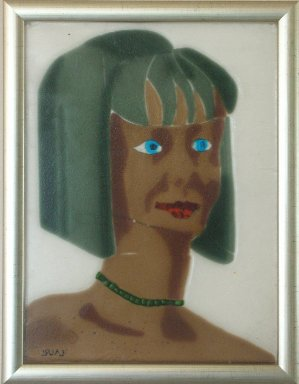
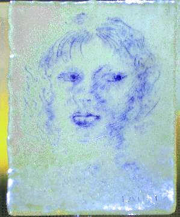

Harlequin

Dark Hair Girl
Blond Girl

A Refugee Mother

Lasitauluja
|
|
Harlekiini Harlequin |
|
|  |
Tumma tyttö Dark Hair Girl |
|
Vaalea tyttö Blond Girl |
|
|
|
Pakolaisäiti A Refugee Mother |
| Vivaldi: La Folia | |
|  | Susan |
| Dirty Old Man |
|